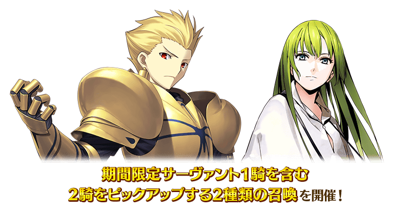
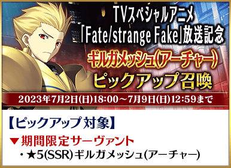
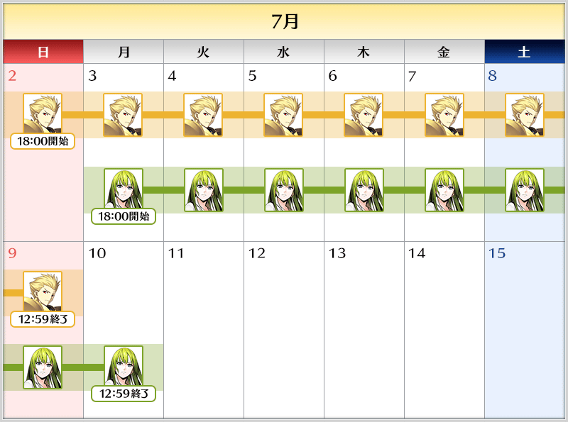
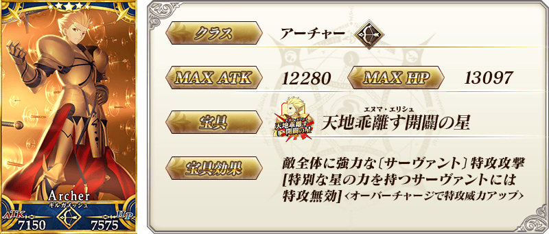
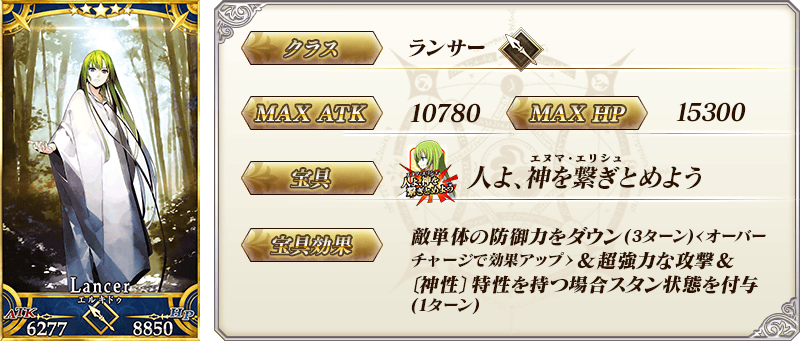
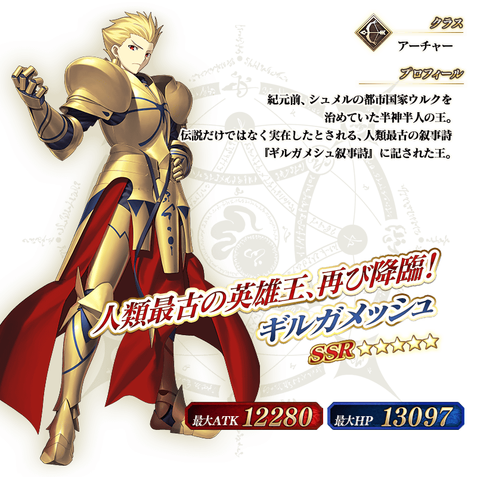
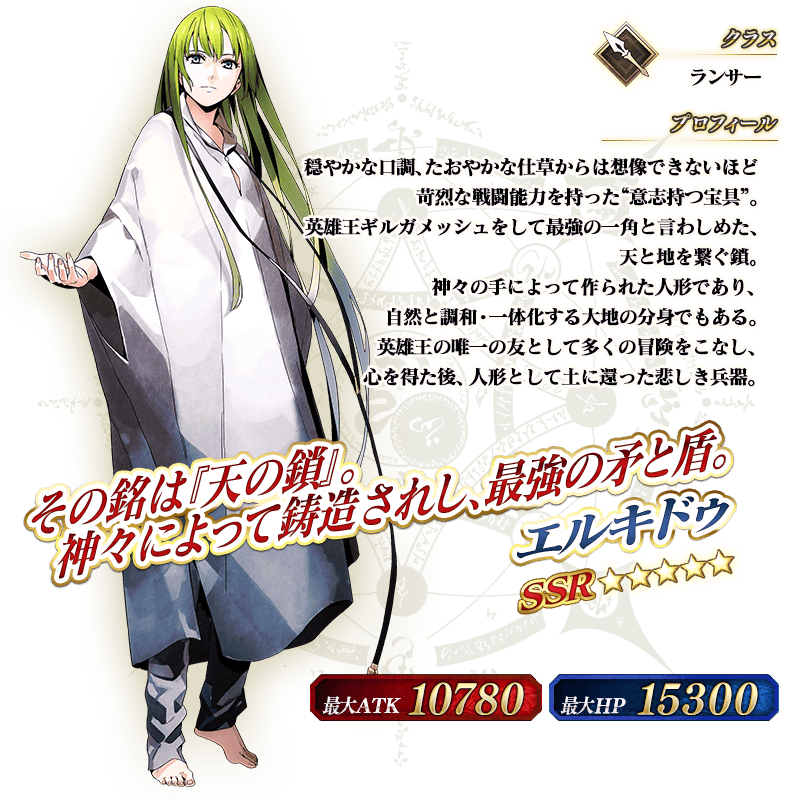

◆『TV特別動畫「Fate/strange Fake -Whispers of Dawn-」放送記念 Pick Up召喚』期間◆
期間:2023年7月2日(日) 17:00～7月10日(一) 11:59

【Pick Up對象】
▼期間限定從者
・★5(SSR)吉爾伽美什(Archer)
▼常駐從者
・★5(SSR)恩奇都
為了記念TV特別動畫「Fate/strange Fake -Whispers of Dawn-」的放送，舉辦包含1位期間限定從者的2位Pick Up的2種召喚！
Pick Up期間中，Pick Up對象從者的出現機率提升！
詳情請在聖晶石召喚畫面左下的召喚詳細確認。
11次召喚中確定1張★4(SR)以上和確定1位★3(R)以上的從者！
※確定★4(SR)以上包含從者和概念禮裝。

◆『TV特別動畫「Fate/strange Fake -Whispers of Dawn-」放送記念 Pick Up召喚』時間表◆

※請注意各Pick Up召喚的舉辦期間不同。
在本召喚的舉辦期間中預定實施維修。
維修中無法遊玩遊戲及進行召喚，敬請諒解。
關於維修的詳情會在日後再次報告。
◆『TV特別動畫「Fate/strange Fake -Whispers of Dawn-」放送記念 Pick Up召喚』的注意◆
本次的召喚是每個召喚內容做為個別召喚舉辦的設定。
每10次召喚進行的「＋1次獎勵召喚」與用有償聖晶石進行的1天1次限定「1次召喚」會變成每個召喚內容分別計算。
本召喚中，只有在各召喚Pick Up的從者才是透過「確定召喚」召喚的對象。
【重要】
◆關於「確定召喚」功能◆
・期間限定Pick Up召喚中，在329次以內未召喚到Pick Up對象★5(SSR)從者情況，只限1次可在進行第330次的召喚時「確定召喚」必定1位Pick Up對象★5(SSR)從者。
・在同時間舉辦多個期間限定Pick Up召喚的情況，各召喚分別(每個召喚畫面頁面)計算召喚次數。另外，以每日交替Pick Up召喚的內容切換情況，各自分別計算召喚次數。舉例，每天23:00時間點變更召喚內容的Pick Up召喚情況，請注意在召喚內容變更的時間點會重置召喚次數的計算。
・請注意期間限定Pick Up召喚中滿足以下任何條件的話，在召喚畫面會顯示「Pick Up對象確定召喚已結束。(ピックアップ対象の確定召喚は終了しました。)」，該召喚中「確定召喚」功能變成無效。
・第329次前召喚到Pick Up對象★5(SSR)從者
・在第330次確定召喚到Pick Up對象★5(SSR)從者
・召喚次數在期間限定Pick Up召喚中用有償聖晶石、無償聖晶石、呼符進行召喚時都會計算。目前的召喚履歴可於該召喚畫面內確認。
※每10次召喚進行的「＋1次獎勵召喚」與用有償聖晶石進行的1天1次限定「1次召喚」也在計算的對象。
※每個召喚內容會分開計算「＋1次獎勵召喚」與1日1次限定的「1次召喚」。請注意在變更召喚內容那天的23:00，「＋1次獎勵召喚」和「1次召喚」的計算會被重置。
※透過有償聖晶石1個「1次召喚」的計算，也會在每天3:00重置。
・在進行11次召喚時滿足「確定召喚」功能條件的情況，在施行11次召喚中會確定召喚1位Pick Up對象★5(SSR)從者。屆時，11次召喚中保障的確定1張★4(SR)以上與確定1位★3(R)以上的從者會另外生效。
・期間限定Pick Up召喚結束後，無法繼承召喚次數到別的召喚。
・故事召喚、友情點數召喚為「確定召喚」功能的對象外。
◆關於1天1次限定的有償聖晶石召喚◆
※可以1天1次限定於期間限定召喚用有償聖晶石1個進行「1次召喚」。
※透過有償聖晶石1個的「1次召喚」，每天3:00重置。
※透過有償聖晶石1個的「1次召喚」對應的聖晶石召喚有好幾個的情況，各個召喚中1天各進行1次有償聖晶石1個的「1次召喚」。
※請注意就算進行透過有償聖晶石1個的「1次召喚」，不包含在1次獎勵的計算。
※聖晶石購入時賦予的「附贈(オマケ)」是做為無償聖晶石而不包含在有償聖晶石的個數，請注意別搞錯。另外，持有聖晶石的細項，可從持有道具一覧確認。
◆關於透過召喚獲得從者硬幣◆
在期間限定召喚、故事召喚、友情點數召喚中入手從者時，可獲得該從者的從者硬幣。
◆有關從者的注意◆
※請注意下述的期間限定從者只會從成為Pick Up對象的召喚抽出。另外，Pick Up期間結束後，不會追加到故事召喚。
・★5(SSR)吉爾伽美什(Archer)
※下述的從者在Pick Up期間結束後仍會在故事召喚被抽出。
・★5(SSR)恩奇都
期間限定從者
 ※上述「★5(SSR)吉爾伽美什(Archer)」的卡面為靈基再臨第2階段。
常駐從者
 ※上述「★5(SSR)恩奇都」的卡面為靈基再臨第2階段。
 ※上述「★5(SSR)吉爾伽美什(Archer)」的立繪為靈基再臨第2階段。
 ※上述「★5(SSR)恩奇都」的立繪為靈基再臨第2階段。
介紹在本召喚Pick Up的2位從者的寶具演出！
【★5(SSR)吉爾伽美什(Archer)】
【★5(SSR)恩奇都】

TV特別動畫「Fate/strange Fake -Whispers of Dawn-」關聯從者的「幕間物語」，以期間限定變成「就算未持有對象從者也能開放」！
「幕間物語」的開放條件也與平常時的開放條件不同，會變成期間限定的特別開放條件。
務必藉此機會通過對象從者的「幕間物語」吧！

◆舉辦期間(1週間)◆
2023年6月30日(五) 17:00～7月7日(五) 11:59
【對象從者・幕間物語】
| 對象從者 | 對象 「幕間物語」 |
通過報酬 | 期間限定開放條件 | |
|---|---|---|---|---|
| ★5(SSR) 吉爾伽美什(Archer) |
第1節 |
 |
聖晶石 2個 | 通過特異點F |
| 第2節 |
 |
寶具強化 | 通過幕間第1節&第四特異點 | |
| 第3節 |
 |
技能強化 | 通過幕間第2節&第五特異點 | |
| ★5(SSR) 恩奇都 |
第1節 |
|
聖晶石 2個 | 通過亞種特異點Ⅰ |
| 第2節 |
|
寶具強化 | 通過幕間第1節&第2部序幕「序」 | |
※象從者有多個「幕間物語」的情況，全部幕間物語皆為對象。 ※滿足期間限定的開放條件後通過「幕間物語」時未持有對象從者的情況，在入手對象從者的時間點會反映強化內容。 ※對象從者的「幕間物語」就算在未持有的狀態下通過的情況，會計算在Extra任務的進行度。 ※象從者的「幕間物語」，在未通過的狀態超過舉辦期間的情況，對象從者的「幕間物語」會回到未開放，切換成平常的開放條件。 ※關卡通過時的報酬內容沒有變化。 ※已經通過對象從者的幕間物語的情況，無法再度遊玩。
其他還有，期間限定『TV特別動畫「Fate/strange Fake -Whispers of Dawn-」放送記念宣傳活動』的情報公開中！
關於詳情，請自下述橫幅確認。
■『TV特別動畫「Fate/strange Fake -Whispers of Dawn-」放送記念宣傳活動』詳細情報